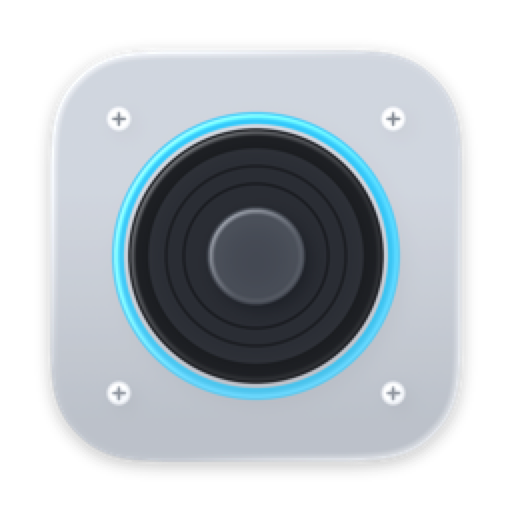
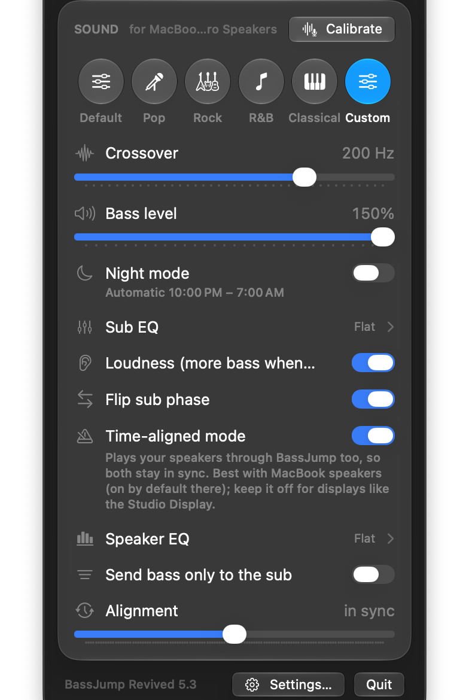
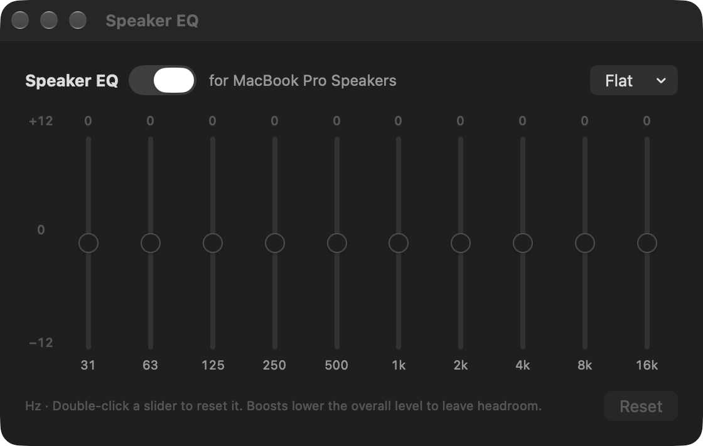
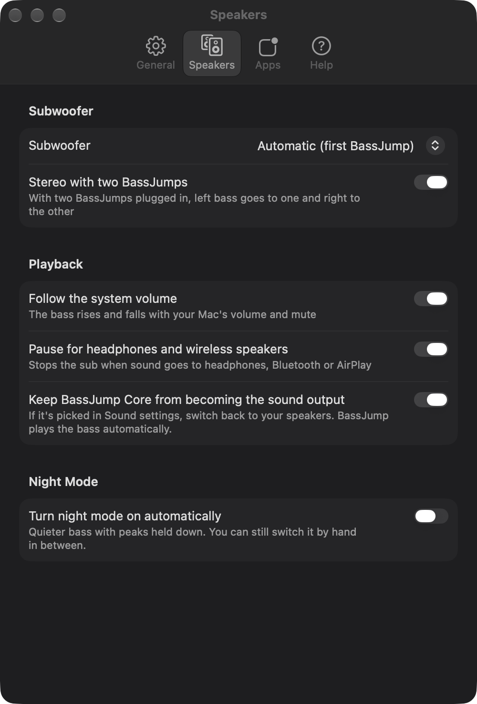

BassJump Revived is a free Mac app that brings the Twelve South BassJump 2 subwoofer back to life on today's Macs. No driver, no kernel extension, no old software.
Pick a preset or fine-tune the crossover and level. BassJump follows your Mac's volume, pauses for headphones, and recovers on its own after sleep or a replug.



Twelve South's software stopped working years ago. BassJump Revived is a ground-up replacement built for current macOS.
Proper Linkwitz-Riley filtering sends just the bass to the sub, so it blends with your speakers instead of muddying them.
Keeps your MacBook speakers and the BassJump perfectly in sync, with optional bass management for small speakers.
Uses your Mac's microphone to set crossover, level, phase and a room EQ cut where your room booms.
Quieter bass with peaks held down, on a schedule if you like — so movie explosions don't wake the house.
Turn it on and off from Control Center, a keyboard shortcut, or Siri and Shortcuts.
New versions arrive automatically. Per-speaker settings, skip-the-bass for calls, two-sub stereo and more.
There's nothing to install besides the app.
No. If it's still installed from years ago, run Twelve South's uninstaller first (or delete the old BassJump app and driver), then use BassJump Revived on its own.
It's built and tested with the BassJump 2 (the USB model, “BassJump Core”). It looks for the BassJump's USB ID, so other versions that show up the same way should work too.
Recent macOS versions let an app hear what your Mac is playing only with this permission. BassJump filters the sound as it plays and sends the bass to the sub — nothing is saved or sent anywhere. The app is open source, so anyone can check.
Open Settings → Help → Copy Diagnostic Info, then open an issue on GitHub and paste it in.